Logiciel & programmation orientée objet
Conception de logiciels modulaires, interfaces Java2D, simulations, moteurs algorithmiques et jeux avec responsabilités clairement séparées.
Je transforme des besoins concrets en applications claires, robustes et explicables.
Développeur orienté logiciel, web, données et intelligence artificielle, je construis des projets complets allant de la modélisation et des pipelines de traitement jusqu’aux API sécurisées, plateformes full-stack transactionnelles ou collaboratives, visualisations interactives, modèles d’apprentissage et interfaces utilisateurs.
01
Un parcours construit autour de la programmation, de la conception et de projets concrets.
En 2025–2026, j’ai suivi un Master 1 Informatique, parcours Intelligence artificielle et sciences des données, à l’Université de Caen Normandie. À partir d’octobre 2026, je poursuivrai ma formation à l’ETNA en Master Architecte de Systèmes d’Information, spécialisation développement applicatif.
Mon parcours m’a amené à développer des applications web en PHP/MySQL, des logiciels Java structurés autour de MVC et de design patterns — notamment un jeu Java2D piloté par State, Observer et Strategy —, une application React Native connectée à une API REST sécurisée, EventFlow, une plateforme React/Express transactionnelle avec réservation atomique, paiement Stripe et billets QR signés, ainsi que NexaBoard, une application collaborative en Vue.js 3 et TypeScript reliée à Django REST Framework et PostgreSQL, avec rôles, Kanban transactionnel, commentaires et dashboard. J’ai aussi réalisé des projets décisionnels avec Apache Hop et Power BI, une chaîne Docker MongoDB–GraphQL–D3.js, des travaux en vision par ordinateur, apprentissage profond avec PyTorch, apprentissage par renforcement, explicabilité de modèles et analyse statistique avancée.
Je recherche une alternance où je pourrai contribuer à des produits utiles, progresser au contact d’une équipe expérimentée et prendre progressivement davantage de responsabilités techniques.
Je commence par clarifier les responsabilités, les données et les flux avant d’écrire l’interface.
J’utilise MVC, la programmation orientée objet et des composants réutilisables pour limiter le couplage.
J’analyse les difficultés rencontrées, mesure les compromis et documente les améliorations possibles.
02
Une présentation par domaines d’usage plutôt que des pourcentages difficiles à justifier.
Conception de logiciels modulaires, interfaces Java2D, simulations, moteurs algorithmiques et jeux avec responsabilités clairement séparées.
Applications full-stack et SPA responsives, API REST sécurisées, collaboration en temps réel différé, parcours transactionnels et visualisations interactives pilotées par les données.
Modélisation relationnelle et dimensionnelle, agrégations NoSQL, pipelines ETL et rapports décisionnels.
Extraction d’information, modèles supervisés, ensembles, renforcement et expérimentation explicable.
Traitement d’images classique et entraînement de réseaux avec pipelines de données reproductibles.
Exploration quantitative, réduction de dimension, diagnostic de modèles et clustering implémenté et comparé.
Travail sous Linux, versionnement, intégration continue, reverse proxy, serveurs applicatifs, conteneurisation multi-services et validation automatisée des interfaces et API.
03
Une progression universitaire entre fondamentaux, génie logiciel et architecture applicative.
ETNA — École des Technologies Numériques Avancées
Université de Caen Normandie
Université de Caen Normandie
Université de Béjaia
04
Chaque projet est présenté comme une étude de cas : objectif, architecture, difficultés et apprentissages.
20 projets affichés

Application Vue 3 et Django REST avec rôles, Kanban drag & drop, commentaires, dashboard Chart.js, JWT sécurisé, PostgreSQL, Docker et CI GitHub Actions.
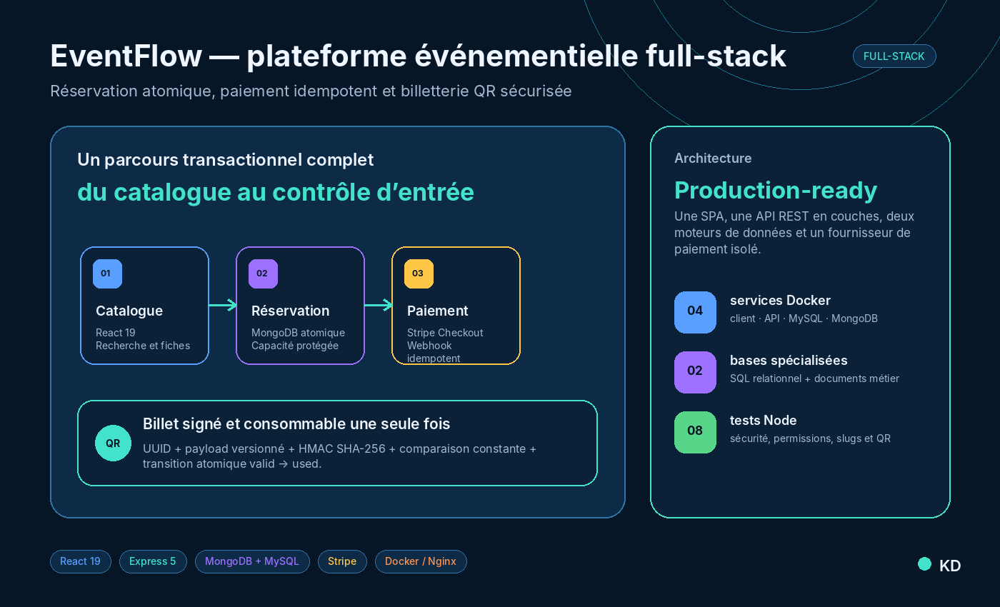
Plateforme React et Express avec authentification JWT, rôles, MySQL, MongoDB, réservation atomique, paiement Stripe et billets QR signés, orchestrée avec Docker et Nginx.
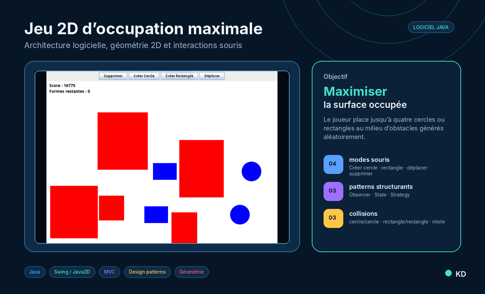
Jeu desktop Java Swing fondé sur MVC et les patterns State, Observer et Strategy, avec interactions souris, géométrie de collision et score calculé par surface.
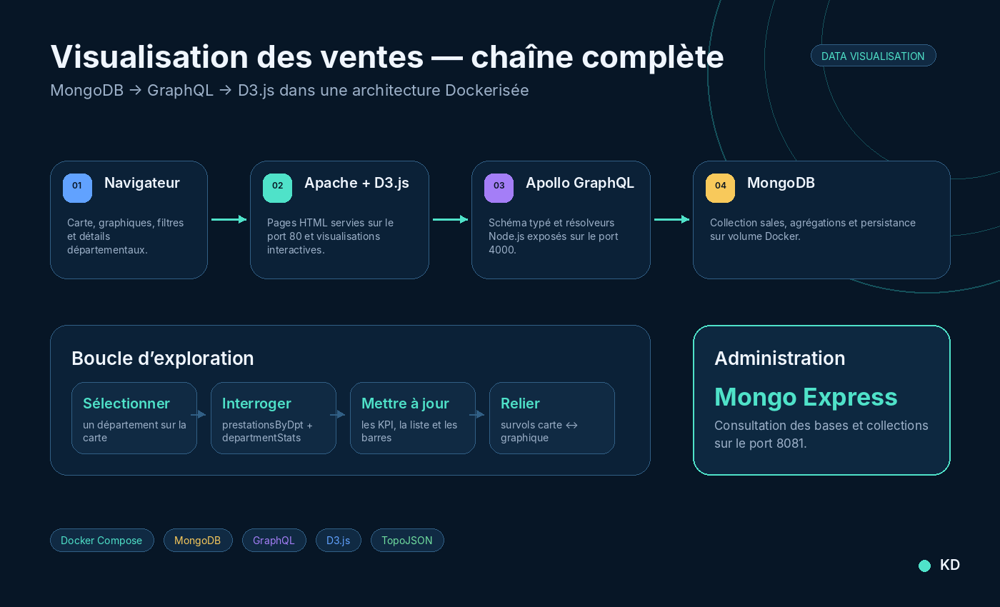
Application multi-conteneurs qui agrège des ventes dans MongoDB, les expose avec Apollo GraphQL et les transforme en KPI, graphiques et carte de France interactive avec D3.js.
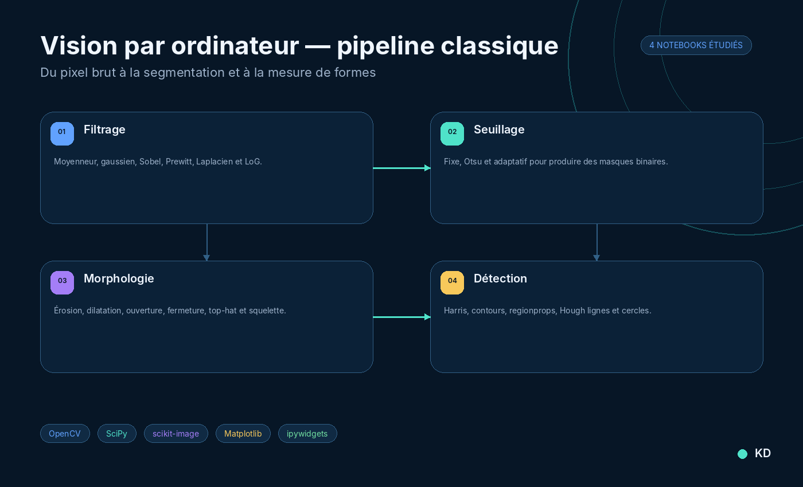
Série de notebooks OpenCV consacrés aux convolutions, seuillages, morphologie, segmentation, mesures de régions et transformées de Hough.
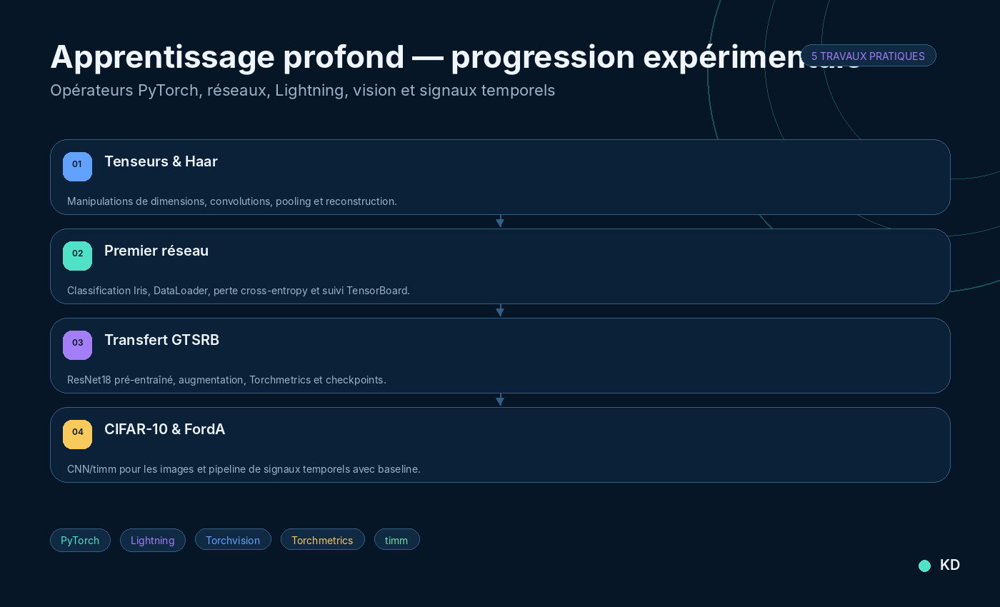
Parcours PyTorch allant des tenseurs et ondelettes de Haar à la classification GTSRB/CIFAR-10, avec Lightning, ResNet18, métriques et pipelines de séries temporelles.

Travaux pratiques sur AdaBoost, SVM/PCA, SARSA, Q-learning, approximation PyTorch et méthodes d’explicabilité d’images.

Huit notebooks couvrant statistiques descriptives, χ², ACP, régression et influence, sélection Mallows Cp, K-means et EM/GMM implémentés manuellement.
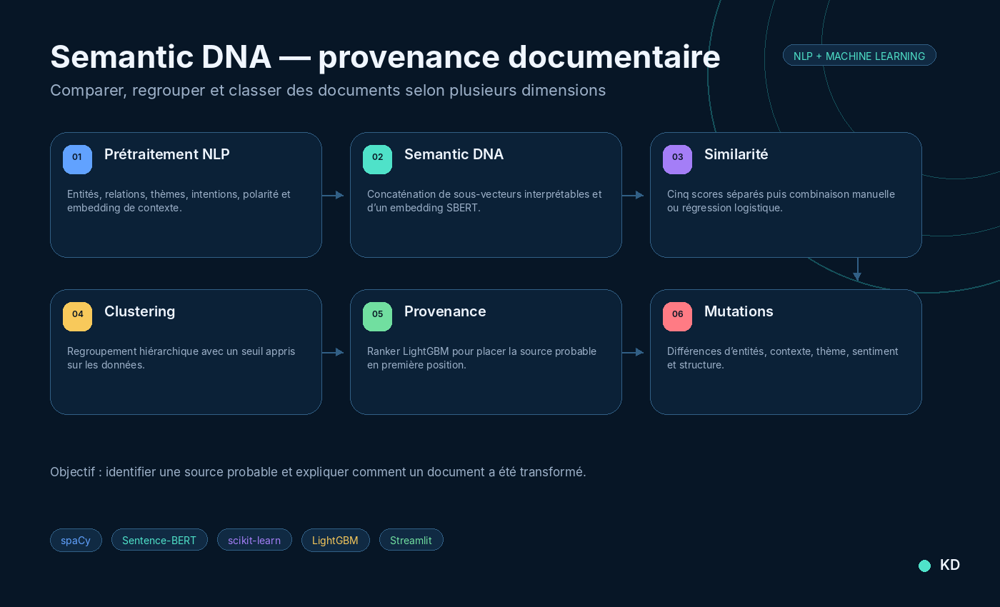
Pipeline NLP et machine learning capable de comparer des documents, regrouper les versions liées, classer la source probable et expliquer les transformations détectées.

Application de TAL français combinant spaCy, WordNet et embeddings pour transformer un texte selon des contraintes littéraires tout en préservant sa structure.

Moteur Python qui formalise un jeu de nombres secrets comme un CSP dynamique, propage les contraintes et recommande les questions les plus informatives avec un score de risque.
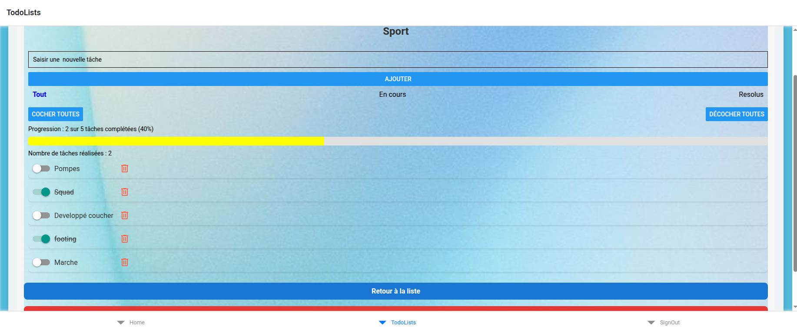
Application React Native connectée à une API REST sécurisée pour organiser des listes, suivre l’avancement et gérer une session utilisateur.
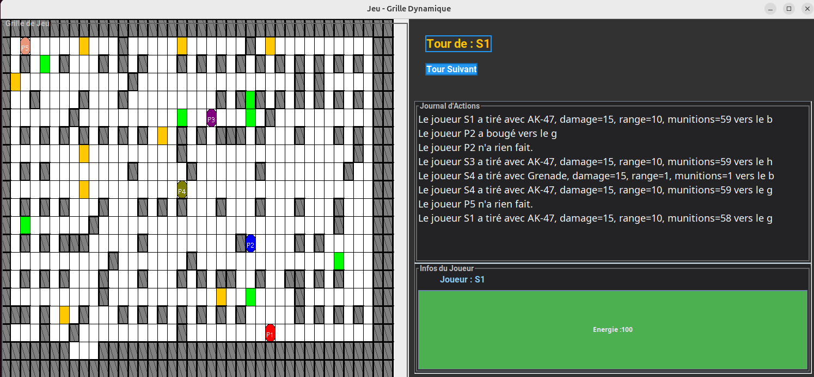
Jeu Java avec génération procédurale de labyrinthe, comportements d’IA et architecture fondée sur plusieurs design patterns.

Banc d’essai Python comparant cinq tris selon la taille, le désordre, les comparaisons, les accès mémoire et la distribution des données.
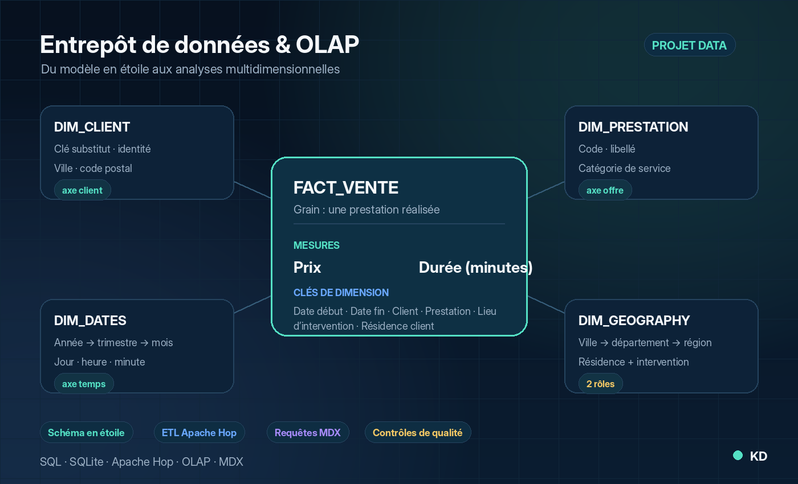
Conception d’un entrepôt en étoile, alimentation avec Apache Hop et requêtes MDX pour analyser les prestations par client, temps, géographie et catégorie.
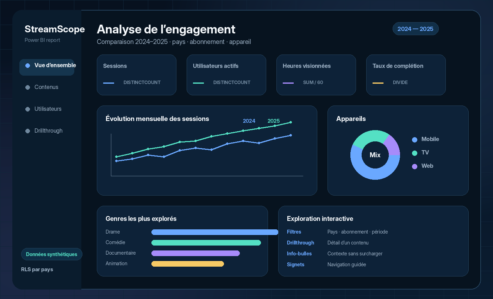
Rapport Power BI interactif pour suivre sessions, utilisateurs actifs, heures visionnées et complétion, avec comparaison 2024–2025 et sécurité RLS par pays.
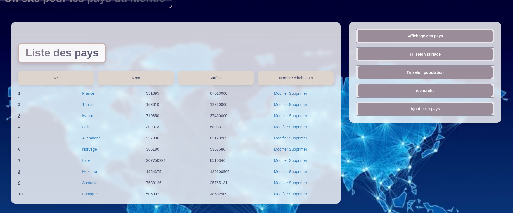
Application PHP/MySQL avec recherche, tri, fiches détaillées et opérations CRUD sur une base de pays.
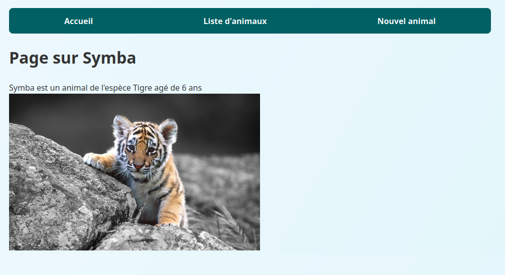
Application PHP orientée objet qui sépare modèle, vues et contrôleurs pour gérer des fiches d’animaux et leurs images.
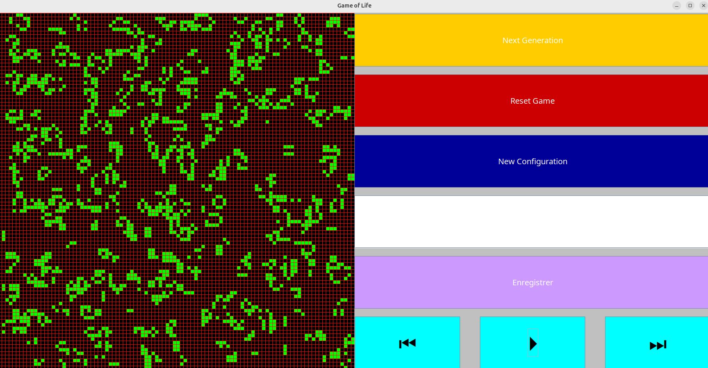
Automate cellulaire en Java avec grille configurable, contrôle de la simulation et mise à jour graphique en temps réel.

Jeu de taquin avec modèle partagé entre interface Swing et terminal, mélange toujours résoluble et compteur de mouvements.
05
Je suis disponible pour échanger à propos d’une alternance, d’une mission de développement ou de mes projets.